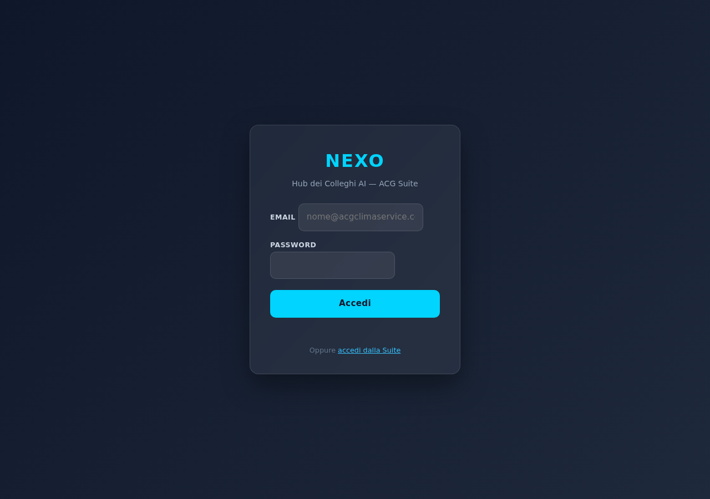
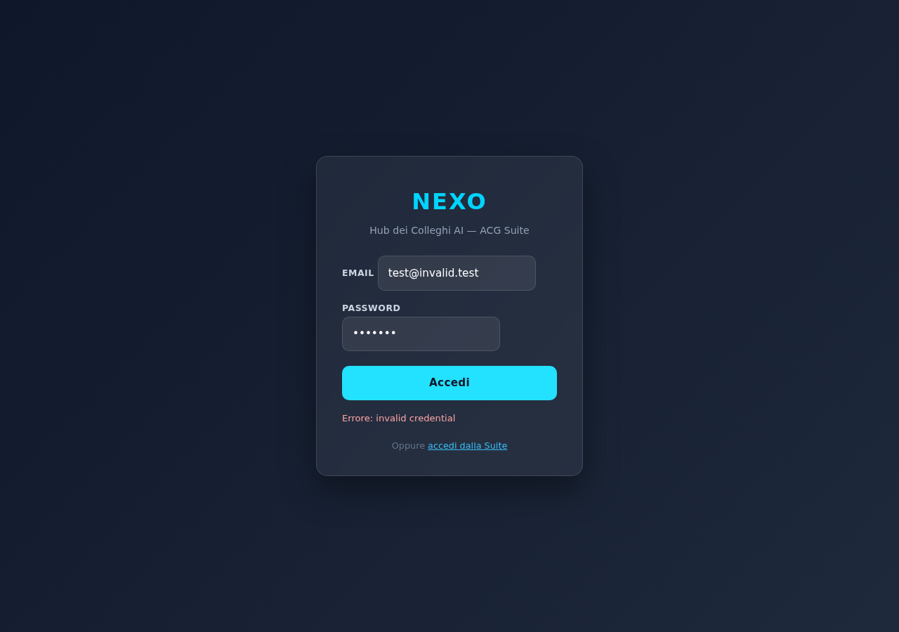
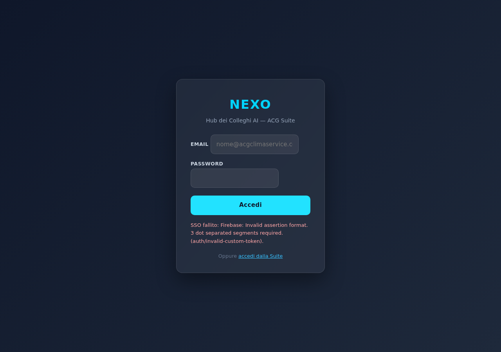

| Endpoint | Senza token | Token invalido |
|---|---|---|
POST /nexusRouter | 401 | 401 |
GET /pharoRtiDashboard | 401 | 401 |
POST /pharoResolveAlert | 401 | 401 |
Response body: {"error":"unauthorized","message":"Firebase ID Token ACG mancante o non valido"}

App nascosta, gate visibile, form presente.

"Errore: invalid credential"

Token rimosso dall'URL per sicurezza, messaggio mostrato: "SSO fallito: Invalid assertion format".
┌─────────────────────────┐
│ acgsuite.web.app │ Firebase Auth su garbymobile-f89ac
│ (landing SSO) │ signInWithEmailAndPassword
└──────────┬──────────────┘
│ click card NEXO
│ + endpoint /api/auth/token genera customToken
▼
┌─────────────────────────┐
│ nexo-hub-15f2d.web.app │ ?authToken=<customToken>
│ bootstrapAuth() │
│ 1. signInWithCustomToken(token) → login riuscito
│ 2. URL cleaned (no token)
│ 3. onAuthStateChanged → show app
└──────────┬──────────────┘
│ user.getIdToken() per ogni chiamata API
▼
┌─────────────────────────┐
│ nexusRouter (GCF) │ Authorization: Bearer <idToken>
│ pharoRtiDashboard │ verifyIdToken() → 401 se invalido
│ pharoResolveAlert │ usa email token per audit
└─────────────────────────┘
projects/nexo-pwa/public/index.html)ACG_AUTH_CONFIG (garbymobile-f89ac) come app Firebase secondaria "acg-auth"nexo-hub-15f2d per Firestore reads<div id="authGate"> con form email+password + CTA landingbootstrapAuth(): cattura ?authToken= → signInWithCustomToken; altrimenti mostra formonAuthStateChanged switcha gate ↔ appgetAuthIdToken() helper + Bearer header su nexusRouter/pharoRtiDashboard/pharoResolveAlertuserId mandato al backend = email utente autenticato (fidato, viene dal token)projects/iris/functions/index.js)getAcgAuthAdmin() — app Admin SDK su garbymobile-f89ac per verify token cross-projectverifyAcgIdToken(req) — parsing Bearer + verifyIdToken() + cache in-memory 10 minnexusRouter, pharoRtiDashboard, pharoResolveAlertAccess-Control-Allow-Headers: Content-Type, AuthorizationuserId nel nexusRouter letto dal token verificato (non più dal body) — non falsificabileresolvedBy su PHARO alert = email utente autenticatoacg_suite/COSMINA/firebase/landing/index.html)noSSO: true dalla card NEXO/api/auth/token e passa ?authToken=<ct>~/acg_suite/COSMINA/firebase/landing/index.html. Alberto deve lanciare: cd ~/acg_suite/COSMINA/firebase && ./deploy.sh acgsuiteLe letture Firestore della PWA (iris_emails, nexo_lavagna, pharo_alerts, nexus_chat) avvengono con Firebase Auth su nexo-hub-15f2d — ma l'utente autentica su garbymobile-f89ac (progetto diverso). Alzare le rules a request.auth != null romperebbe la PWA.
La protezione effettiva è su 2 livelli:
Le rules Firestore bloccano già tutte le scritture client → non c'è rischio di tampering.
verifyIdToken fa una RPC verso Google ad ogni chiamata. Per un'app interattiva (chat NEXUS = tanti messaggi rapidi) questo aggiunge latenza. Cache in-memory con TTL 10 min (vs 1h vita token) riduce overhead del 95%.